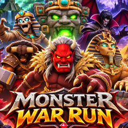

Datenschutzerklärung
Stand: 5. November 2026
Verantwortlicher
Erim
E-Mail: info@zac-solutions.de
Kurz gesagt
Zombie War Run erhebt keine personenbezogenen Daten. Es gibt kein Benutzerkonto, keine Werbung, kein Tracking und keine Analyse-Dienste. Die App sendet keine Daten an uns oder an Dritte.
Daten auf deinem Gerät
Damit das Spiel funktioniert, speichert die App ausschließlich lokal auf deinem Gerät:
- deinen Distanz-Rekord,
- die Anzahl deiner Sprengbomben,
- die gewählte Sprache.
Diese Daten verlassen dein Gerät nicht und werden gelöscht, wenn du die App löschst.
Internet
Das Spiel läuft vollständig offline. Alle Grafiken, Töne und Modelle sind in der App enthalten.
Kinder
Da keine Daten erhoben werden, werden auch keine Daten von Kindern erhoben.
Deine Rechte
Nach der DSGVO hast du das Recht auf Auskunft, Berichtigung, Löschung, Einschränkung der Verarbeitung, Datenübertragbarkeit und Widerspruch sowie das Recht auf Beschwerde bei einer Datenschutz-Aufsichtsbehörde. Da wir keine Daten über dich speichern, gibt es bei uns nichts zu beauskunften oder zu löschen. Bei Fragen schreib uns gern.
Änderungen
Sollte eine spätere Version Funktionen wie Werbung enthalten, die Daten verarbeiten, wird diese Erklärung vorher aktualisiert und in der App darauf hingewiesen.
Privacy Policy
Last updated: November 5, 2026
Controller
Erim
Email: info@zac-solutions.de
In short
Zombie War Run does not collect any personal data. There are no user accounts, no ads, no tracking and no analytics services. The app does not send any data to us or to third parties.
Data on your device
To work, the app stores only locally on your device:
- your distance record,
- the number of your blast bombs,
- your chosen language.
This data never leaves your device and is removed when you delete the app.
Internet
The game runs fully offline. All graphics, sounds and models are included in the app.
Children
As no data is collected, no data from children is collected either.
Your rights
Under the GDPR you have the right of access, rectification, erasure, restriction, data portability and objection, and the right to lodge a complaint with a supervisory authority. As we store no data about you, there is nothing to disclose or delete. Feel free to contact us with any questions.
Changes
If a later version adds features that process data, such as ads, this policy will be updated beforehand and the app will point this out.